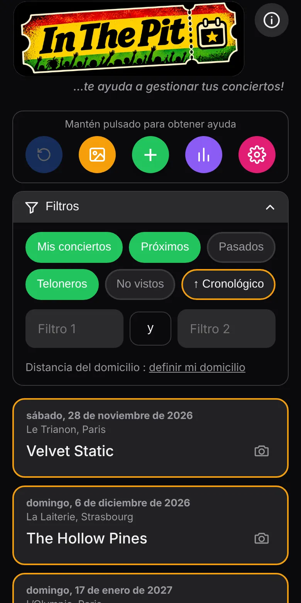
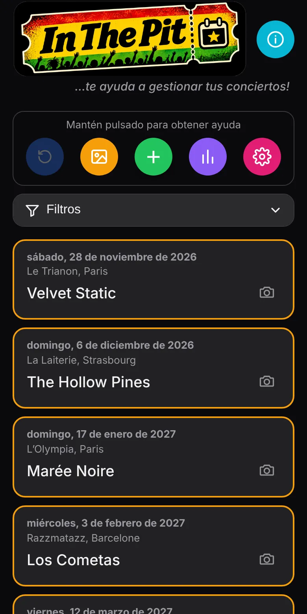
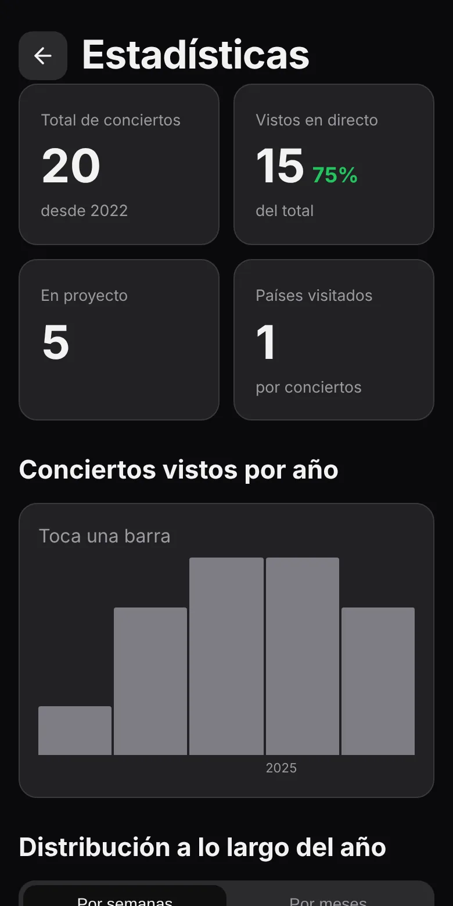

Tu diario de conciertos, entradas incluidas.
In The Pit guarda cada concierto al que has ido o irás, con las entradas, las fotos y tus amigos. Gratis, en tu móvil.


Los próximos conciertos, encontrados para ti
Cada día, In The Pit lee la agenda de las salas a las que van sus miembros y añade los conciertos que faltan a la lista pública. Los ves junto a los tuyos, y basta un toque para importar uno a tu lista.
- Teloneros, precio base y enlace a la página del concierto, con una mención roja «Agotado» en cuanto la sala lo anuncia.
- Una notificación te avisa cuando un concierto nuevo coincide con tus gustos (los artistas de tu lista y tus géneros favoritos), o cuando uno se agota.
- Tú eliges hasta dónde desde tu casa: 10 km por defecto, hasta ilimitado.
¿Sin PDF? Vale la pena igual.
Subir las entradas es opcional. Sin un solo PDF, In The Pit ya te da:
- todo tu historial de conciertos, cada uno añadido en segundos
- filtros, estadísticas y tus salas favoritas
- los conciertos de tus amigos, y un aviso cuando añaden nuevos
- recordatorios antes de cada concierto, y la lista pública de conciertos cerca de ti
Tus entradas, bajo llave.
Si subes un PDF, puedes cifrarlo en tu teléfono antes de que salga. Nadie más puede abrirlo, ni siquiera nosotros.
Cifrado AES-256, hecho en tu teléfono. La frase secreta nunca sale de él.
Las entradas listas en la puerta
Sube el PDF que recibiste. In The Pit lee el artista, la fecha, la sala y el precio por ti. En la entrada, un toque abre una pantalla negra solo con el código QR (o el código de barras), grande y nítido. Se prepara con antelación: aparece al instante, incluso sin cobertura en la sala. El PDF queda a un icono de distancia para el personal.
- ¿Entrada de papel? Fotografíala. Se endereza, se recorta y se guarda como una imagen muy ligera.
- Añade una nota a la foto. Tus amigos la leen traducida a su idioma.
- Las tarjetas de socio de las salas también, con su propia pantalla QR a un toque de tu entrada. ¿Entrada comprada en DICE? Marca «Entrada DICE» y el mismo botón abre la app DICE.
2026-11-28VS-2611-A7K3-9X41-0058
Encuentra cualquier concierto en segundos
Interruptores para tus conciertos, los de tus amigos, la lista pública, pasados, próximos, teloneros y aún no vistos. Orden por fecha en ambos sentidos y dos palabras clave combinadas con y / o.
- Un control deslizante deja solo lo que está cerca de casa, y la distancia aparece en cada concierto.
- Tus filtros se recuerdan y un botón azul los reinicia todos.
- La búsqueda también encuentra amigos, por nombre o correo.
- Un corazón para los artistas que te encantan, una pica invertida para los que no quieres volver a ver: desaparecen de tu lista. Un filtro «Lista negra» los recupera si cambias de opinión.
Los conciertos son mejores con amigos
Comparte tu lista por correo. Los conciertos de tus amigos aparecen en la tuya, con su nombre, y puedes renombrarlos como quieras. Recibes un aviso cuando un amigo añade un concierto. Al abrir la app, te esperan los conciertos que tus amigos añadieron desde tu última visita.
- Tus abonos siguen siendo privados. Solo se muestran a tus amigos las fotos y notas de entradas antiguas.
Tus conciertos en cifras
Conciertos por año, artistas más vistos, salas más frecuentadas, países y cómo se reparte tu año por semanas o meses. Toca una barra para ver los conciertos que hay detrás.

No te pierdas el día
Avisos una semana antes, la víspera y el mismo día. Tú eliges cuáles. Los conciertos de hoy se fijan arriba en tu lista de próximos.
Y algunas cosas pequeñas
Cinco idiomas
Inglés, francés, español, italiano y alemán.
En tu pantalla de inicio
Añádela desde el menú del navegador. Sin tienda, sin descargas.
Fotos de los grupos
Elige una de Wikipedia o Deezer, o usa la tuya.
Tu propio fondo
Elige la imagen detrás de tu lista.
Vista de invitado
Recorre la lista de la comunidad sin cuenta.
Buzón de ideas
Propón lo que viene. Llega directo a los creadores.
Novedades
Tras una actualización, ve solo lo que cambió desde tu versión.
Funciona sin conexión
Tu lista y tus entradas se abren sin cobertura, incluso en el fondo de la sala.
Mejor en comunidad
Cuantos más compartan sus conciertos, más rica es la lista pública. Tú eliges si participar, de forma anónima.
Tus datos siguen siendo tuyos
Exporta todo o elimina tu cuenta en un toque. Sin publicidad, nada se vende.
Caja fuerte de entradas opcional
Bloquea tus entradas PDF con una frase secreta que solo tú conoces. Se cifran en tu teléfono: nadie más puede leerlas. Una entrada más importante puede incluso tener su propia frase secreta.
Reembolso del comité de empresa
Elige un periodo: las entradas de los conciertos asistidos salen en un solo PDF con una página de resumen, listo para enviar. Los precios que faltan se leen en las entradas.
Pega un enlace y listo
¿Has encontrado el concierto en la web de una sala o un festival? Pega la dirección de la página: artista, fecha, sala y ciudad se rellenan solos.
Cuenta tu noche
¿Vuelves de un concierto? Escribe unas palabras, añade fotos y vídeos cortos: tus amigos reciben un aviso y ven tu relato en la app.
Pruébala sin cuenta
La app se abre directamente en los conciertos compartidos por sus miembros. Crea una cuenta desde el menú cuando quieras llevar los tuyos.
Toda la noche de una vez
Cabeza de cartel y teloneros en una sola entrada, la fecha en un toque, la ciudad deducida de la sala: añadir un concierto lleva unos segundos.
Tus géneros
Cada grupo está vinculado a sus géneros y estilos de Discogs. Elige los que te gustan y el filtro «Mis géneros» solo deja esas noches.
Cuentas públicas
Los gastos de la app y las donaciones recibidas se publican en la app y en este sitio: todos pueden ver si se sostiene.
Las agendas de las salas, leídas cada día
Cada día, In The Pit lee la agenda de las salas a las que van sus usuarios y añade los conciertos que faltan a la lista pública, con teloneros, precio base y conciertos agotados. Una notificación te avisa cuando un concierto nuevo coincide con tus gustos.
Gratis, y se queda gratis
In The Pit no cuesta nada. Mantenerlo tiene costes fijos, así que si te gusta puedes colaborar en Ko-fi. Las cuentas se aprueban a mano: pide acceso con tu correo y recibirás respuesta.
Las cuentas, a la vista
In The Pit no tiene publicidad y no vende ningún dato. Aun así, mantenerlo cuesta dinero cada mes. Esto es lo que cuesta y lo que aportan vuestras donaciones, actualizado en directo.
In The Pit seguirá siendo gratuita mientras las donaciones cubran sus gastos. Si no es así con el tiempo, la app tendrá que pasar a freemium: lo esencial seguiría siendo gratuito y algunas funciones avanzadas pasarían a ser de pago. Cada donación aleja ese momento.
El tiempo dedicado a crear y mantener la app no se cuenta: es un regalo.
Colaborar en Ko-fiCargando las cifras…
de los gastos mensuales cubiertos por donaciones
Los últimos 12 meses
Preguntas
¿Tengo que subir mis entradas?
No. Todo funciona sin ellas salvo la pantalla de la entrada: tu lista, filtros, estadísticas, amigos, recordatorios y la lista pública. Si subes una, puedes cifrarla con una frase secreta para todas tus entradas o solo para esa.
¿Hay que instalar algo?
No. Ábrela en tu navegador. Si quieres, añádela a tu pantalla de inicio desde el menú del navegador y se comporta como una app.
¿Quién puede ver mis conciertos?
Tú y los amigos con quienes compartes. También puedes aparecer, de forma anónima, en la lista pública de invitados. Está desactivado por defecto y no muestra nombre, notas, precios ni entradas.
¿Qué hace con mis entradas?
Una IA lee las entradas en PDF para rellenar artista, fecha, sala y precio. Tiene la consigna de ignorar tu nombre, dirección y códigos de barras. El código QR o de barras en sí se lee en tu teléfono, no la IA. También lee las páginas de conciertos cuyo enlace pegas. Las entradas de papel se guardan como fotos y tú decides qué añadir.